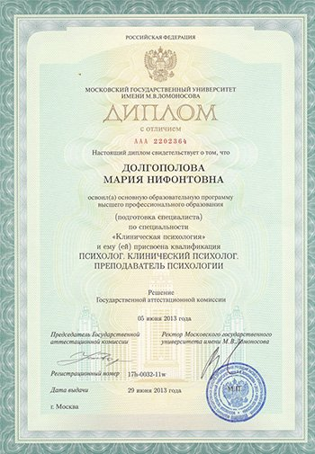

Академическое образование

2008–2013 — МГУ имени М. В. Ломоносова, специальность «Нейро- и патопсихология» (квалификация Клинический психолог)
2013–2014 — МГУ им. М. В. Ломоносова, специальность Медицинская психология, аспирант
Повышение квалификации
2010 — участие в летнем интенсиве Московского Института Гештальта и Психодрамы, факультет Гештальт-терапии, — 63 часа
2013–2014 — Московский Институт Гештальта и Психодрамы, факультет Гештальт-терапии, 1 ступень — 100 часов
2014 — прохождение программы повышения квалификации от Лос-Анджелесского Объединения Гештальт-тренеров (GATLA) — 63 часа
2014–2016 — обучение в долгосрочной программе повышения квалификации Московской Ассоциации Аналитической Психологии — 500 часов
2014 — прохождение программы повышения квалификации от Лос-Анджелесского Объединения Гештальт-тренеров (GATLA) — 63 часа
2015–н.вр. — 3 модуля повышения квалификации гештальт-консультантов, тренер Долгополов Н.Б. — 90 часов
Клиентская практика
2011–н.вр. — психолог–консультант в Московском Институте Гештальта и Психодрамы (МИГИП)
С 2012 года — индивидуальные очные и скайп (Skype) консультации для взрослых
2013–2014 — психологические skype консультации в центре i-helpu.ru
2013–н.вр. — сотрудничество с проектом Инфодоктор
С 2014 года — консультации супружеских пар или родителей с детьми старше 12 лет
С 2014 года — индивидуальная работа с подростками от 12 лет
Индивидуальный психотерапевтический опыт
2008–н.вр. — работа в группе, 316 часов (базовая образовательная программа и интенсивы Московского Института Гештальта и психодрамы, Лос-Анджелесская программа повышения квалификации гештальт‑терапевтов GATLA, модули повышения квалификации гештальт-консультантов «четвертая ступень»)